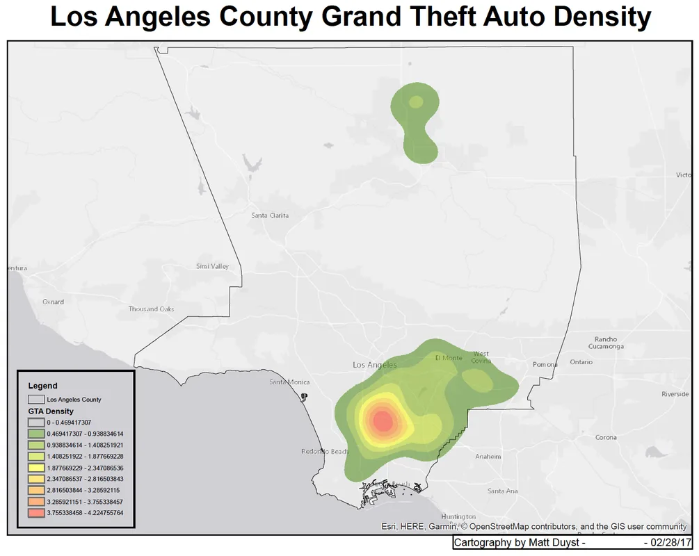
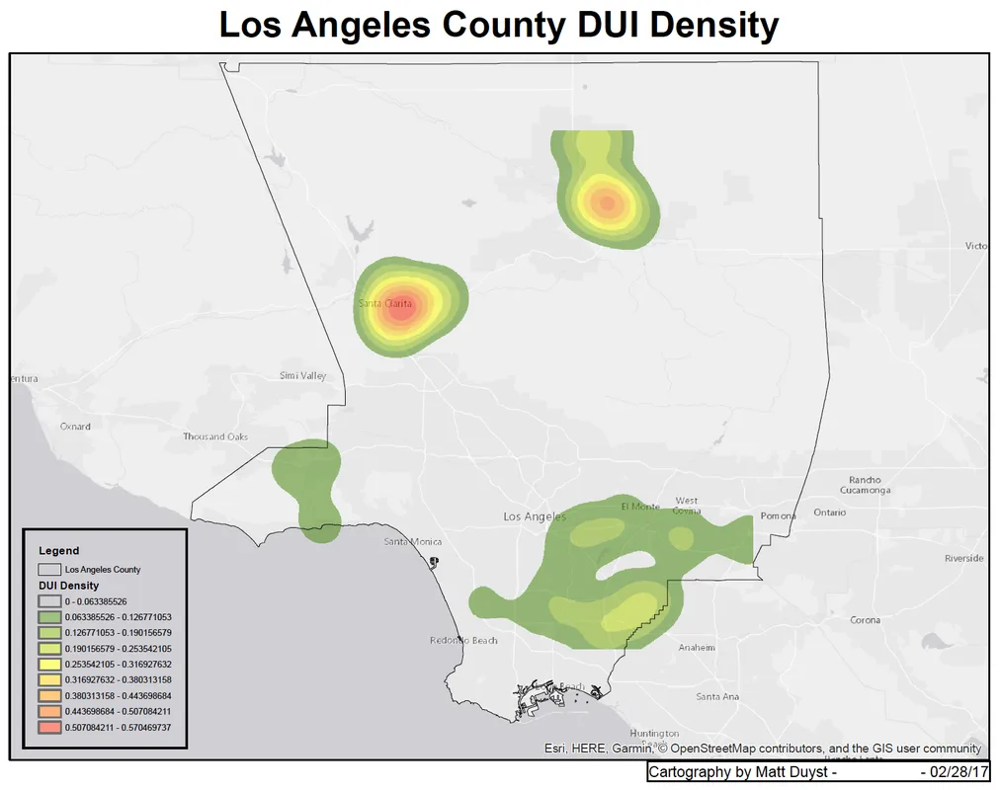
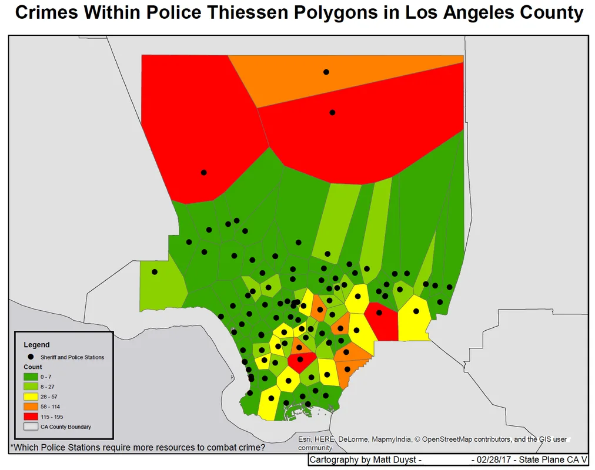
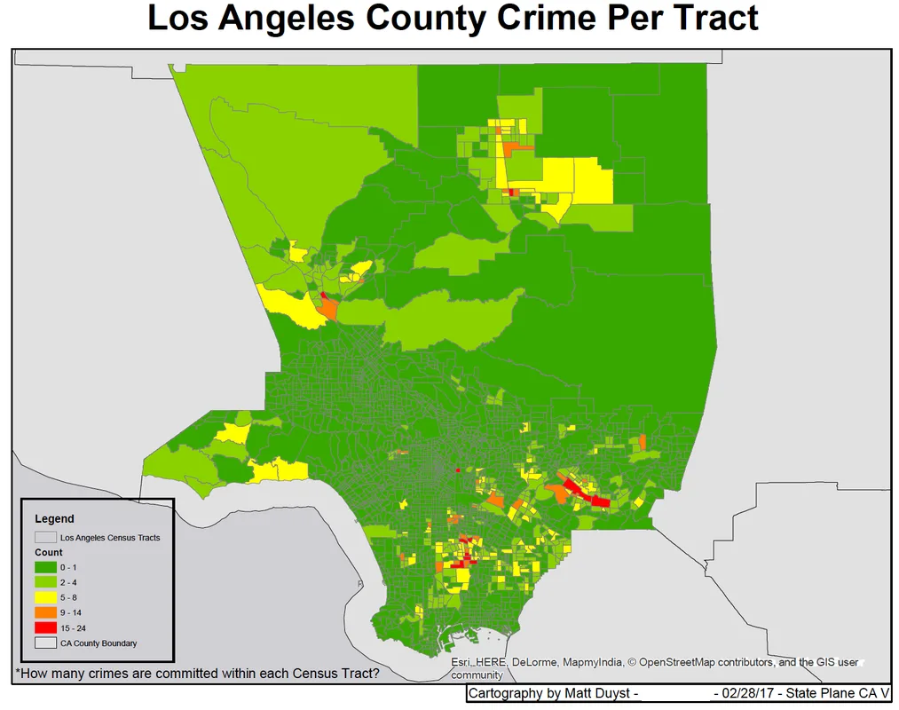

UCLA coursework, 2014 to 2018
LA County Criminal Mappings: Heat Mapping & Thiessen Polygons of Reported Crimes
Abstract:
To solve questions or ambiguities around proximity and predictive policing, various methods such as density maps and heat mappings are curated for distribution and analysis purposes. This project uses heat maps to illustrate crimes of the highest magnitude in Los Angeles County: Grand Theft Auto, Possession of Narcotics, and Driving Under the Influence. Maps that accentuate the need for predictive policing were curated through the addition of Thiessen Polygons - an analysis that focuses on proximity of crimes around police stations in Los Angeles County.
Methods:
Data for crime rates (and classification of crimes) was provided by the Los Angeles County Sheriff's department. This data was imported as a CSV into Arcmap as X,Y data and took the form of 'crime points' on the maps. These points were re-projected using 'CA State Plane V' for correct placing. ArcToolbox's density tool allowed for the computation of kernel density .tif's for each crime. These were overlaid on an unobtrusive, light-grey basemap. This process was done for each crime under investigation.
The last two maps contain the same crime data - Grand Theft Auto, Possession of Narcotics, and Driving Under the Influence - but focus on predictive policing. A shapefile containing the amount of police stations within Los Angeles County was downloaded. Thiessen polygons around each police station were produced using the 'Analysis Proximity' feature in ArcToolbox. This creation allowed for an illustration of which zones were within closest proximity for the given police station’s response. Spatially joining the crimes with Thiessen polygons assessed the total number of crimes within each polygon. Through this, an analysis of which police station could use aided help or more resources available to reduce crime. The polygons were color schemed by lowest to highest density of crimes. The level of scale differentiates these two maps; the first map exemplifies Thiessen polygons around each station, while the last map illustrates the number of crimes per census tract in LA County. The census tracts have a color scheme denoting which tracts have the highest concentration of crime, alluding to which areas require a larger concentration of officers patrolling.
Areas of improvement on the maps below can be seen in the count breakdown portion of the Legend. Instead of using numbers for the first three mappings - the heat maps representing specific crimes - a more informative breakdown should be presented (like 'Low,' 'Moderate,' and 'High'). The 'Count' breakdown for the last two maps should be something more symbolic: like 'Number of Crimes Committed.'
Results:




